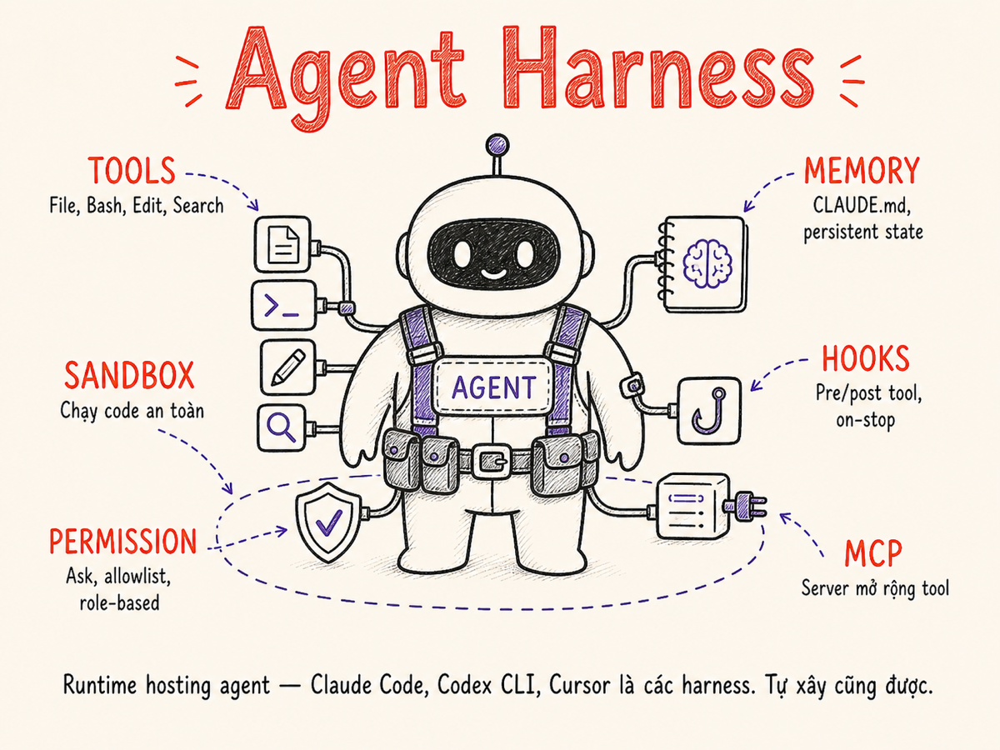

Agent Harness là gì
Runtime hosting vòng lặp agent — model layer, tool layer, sandbox, permission system, observability, hooks, và state management. Từ Claude Code đến Devin, harness là thứ biến LLM thành AI assistant thực sự.

24.1 Định nghĩa harness
Agent harness là runtime environment host và orchestrate vòng lặp agent. Nó nằm giữa model (LLM API) và thế giới thực (filesystem, shell, browser, APIs), đảm bảo mỗi tool call được route đúng, mỗi kết quả được trả về đúng ngữ cảnh, và toàn bộ session được quản lý an toàn có kiểm soát.
Model (Claude, GPT-4o, Gemini) — chỉ là LLM, không tự làm gì được.
Framework (LangChain, Mastra, LlamaIndex) — thư viện giúp xây dựng agent logic.
Harness (Claude Code, Cursor, Devin) — sản phẩm chạy được với loop + tools + UX + sandbox + permissions. Framework là building blocks; harness là ngôi nhà đã xây xong.
Một harness đầy đủ trả lời cho 6 câu hỏi vận hành:
- Loop: Vòng lặp agent được host và dừng như thế nào?
- Tools: Agent có thể làm những gì với môi trường?
- State: Conversation, artifacts, và context được lưu trữ ở đâu?
- Permission: Ai được phép approve hoặc chặn tool calls nào?
- Sandbox: Code nguy hiểm chạy trong môi trường nào?
- Observability: Làm sao debug và audit khi mọi thứ sai?
24.2 Anatomy của một harness hiện đại
Mọi harness production-ready đều có 7 layer phân tầng rõ ràng. SVG dưới đây mô tả kiến trúc từ shell đến model:
7 thành phần cốt lõi
| Thành phần | Vai trò | Ví dụ thực tế |
|---|---|---|
| Model layer | Gọi LLM, quản lý tokens, streaming, tool schemas | Anthropic SDK, OpenAI SDK, Ollama |
| Tool layer | Đăng ký và dispatch tools khi model yêu cầu | Bash, Read/Edit/Write, browser, editor API |
| Sandbox | Cô lập code execution khỏi host system | Docker, E2B, Modal, macOS sandbox-exec |
| Permission system | Kiểm soát tool nào được gọi, khi nào cần human approval | Allowlist/blocklist, ask-mode, role-based |
| Observability | Trace mọi tool call, đo cost/latency, audit log | LangSmith, Braintrust, custom logging |
| Hooks | Inject logic trước/sau mỗi tool call, on agent stop | pre-tool validator, post-tool formatter, on-stop notifier |
| Conversation / State | Lưu và compress message history; quản lý session artifacts | In-memory, SQLite, Redis, MEMORY.md |
24.3 Case study: Claude Code & Anthropic Agent SDK
Claude Code (Anthropic, 2025) là harness mạnh nhất hiện tại cho software engineering. Nó chạy
như CLI trong terminal và cung cấp cho Claude một bộ tools đầy đủ để làm việc với codebase thực.
Tháng 9/2025, Anthropic tách harness loop thành Claude Agent SDK (thay thế "Claude Code SDK") —
một thư viện Python/TS cung cấp agentic loop, built-in tools, subagent spawning, và MCP integration
độc lập với Claude Code CLI.
Tháng 4/2026, Anthropic ra mắt Claude Managed Agents public beta: toàn bộ harness
(agent loop + tool execution + sandbox container + state persistence) được đóng gói thành REST API
(/v1/agents, /v1/environments, /v1/sessions), tính phí
$0.08/session-hour cho compute — lựa chọn cho teams không muốn tự xây harness.
Bộ tools tích hợp sẵn
Read— đọc file với line offsetWrite— tạo file mới (overwrite toàn bộ)Edit— thay thế exact string trong fileBash— chạy lệnh shell tùy ýGlob/Grep— tìm kiếm trong codebase
Agent— spawn subagent với context riêngTodoWrite— quản lý task checklist trong sessionWebFetch— fetch URL và trả về contentSkill— gọi skill (macro) đã định nghĩa sẵn- MCP servers — bất kỳ tool external nào qua MCP
Subagent pattern
Claude Code cho phép agent chính spawn subagent qua Agent tool. Subagent nhận:
(1) system prompt riêng, (2) bộ tool riêng (có thể hạn chế hơn), (3) context window riêng.
Pattern này giải quyết hai vấn đề: context window overflow và parallel execution.
# Ví dụ: orchestrator agent dispatch nhiều subagents song song
# (miêu tả conceptual, không phải code Python thực)
subtasks = [
{"task": "Phân tích schema DB hiện tại", "tools": ["Read", "Bash"]},
{"task": "Tìm tất cả API endpoints liên quan", "tools": ["Grep", "Read"]},
{"task": "Draft migration plan", "tools": ["Write"]},
]
# Orchestrator dùng TodoWrite để track từng subtask
# Kết quả từ subagents được synthesize thành plan tổng thểCLAUDE.md và MEMORY.md — context tĩnh và context động
CLAUDE.md (checked vào repo) cung cấp project-level instructions: code style, architecture patterns, workflow rules. Đây là "system prompt mở rộng" mà mọi session đều nhận.
MEMORY.md (trong ~/.claude/) lưu user-level preferences và learned facts từ các session trước. Claude Code tự động persist thông tin quan trọng vào đây khi user yêu cầu hoặc khi nhận thấy pattern lặp lại.
Permission system trong Claude Code
Harness cung cấp 3 chế độ permission qua .claude/settings.json:
- allowedTools — whitelist tool patterns không cần confirm (e.g.
"Bash(git *)") - deniedTools — blacklist tuyệt đối
- ask-every-call — default: hỏi user trước mỗi tool call nguy hiểm
Settings hooks cho phép định nghĩa shell commands chạy tại 12 lifecycle events:
SessionStart, UserPromptSubmit, PreToolUse, PostToolUse, Stop, và các events mới như subagent dispatch.
Ví dụ: chạy lint trước khi commit, block edits vào generated files, require issue ID trong branch names, security scan sau khi thay đổi dependencies.
24.4 Case study: Codex CLI (OpenAI)
Codex CLI (OpenAI, 2025) là harness CLI cho OpenAI models. Điểm khác biệt chính so với Claude Code là thiết kế sandbox bậc thang rõ ràng và kiến trúc app-server tách biệt. Tháng 4/2026, cùng với GPT-5.5, OpenAI ship thêm subagents, hooks, remote cloud tasks, MCP, auto-review, và image input vào Codex CLI.
Kiến trúc app-server (2026: một server cho mọi surface)
Codex CLI chia thành hai process: App (xử lý UX, render terminal, stream output) và Server (chạy agent loop, quản lý tools, sandbox). Tách biệt này giúp server có thể chạy trong môi trường restricted mà không ảnh hưởng đến UX layer. Kể từ đầu 2026, App Server là single JSON-RPC API dùng chung cho CLI, VS Code extension, web app, macOS desktop app, và tích hợp JetBrains/Xcode — mọi surface dùng cùng một harness loop.
Ba sandbox modes
read-only (default khi chưa set)
Agent chỉ được đọc filesystem. Không được ghi file, không được chạy lệnh mutate. An toàn nhất cho môi trường production hoặc khi user muốn agent chỉ phân tích codebase.
safe recommend cho explore/audit
workspace-write (recommended default)
Agent được ghi vào working directory (project folder) nhưng không được truy cập ngoài workspace. Shell commands được sandbox bởi macOS sandbox-exec hoặc Linux landlock — chặn network access và filesystem ngoài workspace.
balanced recommend cho dev workflow
danger-full-access
Không có sandbox. Agent có thể làm bất cứ điều gì user có thể làm — đọc/ghi mọi file, gọi mọi network endpoint, cài package, v.v. Dành cho power users hoặc CI environments đã có isolation layer riêng (container, VM).
Không dùng danger-full-access trên máy development chứa credentials, SSH keys, hoặc dữ liệu nhạy cảm.
exec subcommand và MCP integration
Codex CLI có lệnh codex exec "task description" để chạy agent non-interactively — phù hợp với CI/CD pipelines. MCP servers được cấu hình trong ~/.codex/config.json, giống cách Claude Code dùng settings.json.
24.5 Case study: Cursor / Windsurf
Cursor và Windsurf là editor-integrated harnesses — chạy bên trong IDE thay vì CLI. Điều này cho phép tích hợp sâu với Language Server Protocol (LSP), symbol lookup, và multi-file context mà CLI harness khó đạt được. Tháng 4/2026, Cursor ra mắt Cursor 3 với interface agent-first: chạy nhiều agents song song trên nhiều repos và environments — local, git worktrees, cloud, remote SSH.
Ưu điểm editor-integrated
- LSP-aware tools: Agent biết chính xác symbol nào là variable, function, hay type nhờ LSP. Không cần grep string blindly.
- Multi-file edit: Cursor có thể mở nhiều file trong context và áp dụng changes atomically, với diff preview trước khi apply.
- Codebase indexing: Cursor lập index toàn bộ codebase để semantic search — tìm "tất cả nơi xử lý payment" mà không cần biết tên file.
- Inline UI: Agent suggestions hiện trực tiếp trong editor inline, không phải terminal riêng biệt.
Agent mode vs Chat mode
Cursor phân biệt hai modes rõ ràng:
- Chat mode: Single-turn Q&A, agent không tự apply changes — user phải manually accept từng suggestion.
- Agent mode (Composer): Multi-step loop, agent tự đọc files, áp dụng edits, chạy terminal commands, lặp lại cho đến khi task hoàn thành hoặc user dừng.
- Cloud agents (Cursor 3): Agent chạy trong cloud VM với browser tích hợp — agent có thể build app, launch, và tương tác với UI (click buttons, fill forms, verify rendering). Lệnh
/worktreetạo git worktree riêng cho mỗi task;/best-of-nchạy cùng task song song trên nhiều models để so sánh kết quả.
Windsurf (Codeium) dùng kiến trúc Cascade: agent có persistent awareness của toàn bộ codebase context, không chỉ những file đang mở. Flows được design để agent proactively suggest changes trước khi user hỏi.
24.6 Aider, Continue, Roo Code, Cline
Một nhóm harness thiết kế theo triết lý minimal — ít tính năng hơn nhưng nhẹ hơn, linh hoạt hơn, và thường open-source hoàn toàn.
| Tool | Triết lý | Điểm mạnh | Hạn chế |
|---|---|---|---|
| Aider | Git-native, CLI, multi-model | Tự động commit, map toàn bộ repo, dùng được với bất kỳ model nào | Không có sandbox; dùng qua terminal, không có UI phong phú |
| Continue | VS Code extension, open-source | Bring-your-own-model, local model support, codebase indexing | Agent mode ít powerful hơn Cursor; permission model đơn giản hơn |
| Roo Code | VS Code fork của Cline, MCP-first | MCP tool integration mạnh, multi-agent orchestration, open-source | Còn mới, ecosystem nhỏ hơn; không có managed hosting |
| Cline | VS Code extension, transparent agent | Hiển thị mọi tool call trước khi execute; rất nhiều model support | Ask-every-call mặc định → chậm nếu task lớn; không có allowlist đủ mạnh |
Điểm chung: tất cả bốn tools này đều có sandbox yếu hơn Claude Code hay Codex CLI. Chúng dựa vào người dùng confirm từng tool call nguy hiểm hơn là system-level isolation.
24.7 Autonomous / cloud harness: Devin, Cosine, OpenHands
Cloud harnesses đại diện cho thế hệ tiếp theo — agent chạy trong container cloud, có thể làm việc hàng giờ mà không cần user hiện diện, với toàn bộ môi trường development isolated trên server.
Đặc điểm kiến trúc
- Per-session container: Mỗi task nhận một Docker container riêng — agent có full Linux environment: bash, git, npm, Python, browser headless.
- Browser tool tích hợp: Agent có thể browse web, đăng nhập trang web (trong sandbox), click UI, screenshot, extract data.
- Long-running sessions: Session có thể kéo dài 30 phút đến vài giờ. User nhận notification khi cần approve hoặc khi task xong.
- Async workflow: User describe task → harness lên kế hoạch → hỏi clarifying questions → user approve → agent tự chạy → báo cáo kết quả.
Devin (Cognition AI)
Devin là harness thương mại đầu tiên được thiết kế như một AI software engineer thực sự. Nó có: shell access, browser, code editor, file system, unit test runner, và khả năng mở PR lên GitHub. Điểm đặc biệt: Devin có knowledge management system để learn từ feedback và lưu project-specific knowledge.
OpenHands (All-Hands AI)
OpenHands là open-source alternative. Tháng 11/2025, OpenHands ra mắt V1 SDK
với re-architecture hoàn toàn: thay AgentController + Runtime bằng mô hình gọn hơn gồm
stateless Agent (emit Actions), Conversation (vòng lặp + EventLog bất biến),
và Workspace (thực thi Actions, trả Observations). Tháng 5/2026, OpenHands bổ sung
sub-agent delegation qua TaskToolSet — agents có thể spawn specialized sub-agents
để xử lý các phần của task phức tạp.
Khi dùng Devin hay OpenHands với private repos, agent cần được cấp credentials (GitHub token, API keys). Luôn dùng fine-grained tokens với scope tối thiểu — không bao giờ cấp full admin access cho harness cloud.
24.8 Permission models
Permission model là cơ chế kiểm soát ai được phép làm gì trong harness. Có 4 trường phái chính:
Ask-every-call (Confirm per tool)
Trước mỗi tool call có side effect (ghi file, chạy shell, gọi API), harness hỏi user confirm. User thấy chính xác command gì và có thể approve/reject.
Ưu điểm: Transparent; user luôn kiểm soát.
Nhược điểm: Rất chậm cho tasks nhiều steps; user fatigue → người dùng bắt đầu auto-approve mà không đọc kỹ.
Dùng khi: Người dùng mới, task có rủi ro cao (deploy, delete), môi trường production.
Cline (default) Cursor ask mode
Allowlist / Blocklist
User định nghĩa pattern nào được phép không cần confirm (allowedTools) và pattern nào bị chặn tuyệt đối (deniedTools). Harness tự động approve các tool calls khớp allowlist, chặn các calls khớp blocklist, và hỏi user cho tất cả còn lại.
# .claude/settings.json — ví dụ allowlist
{
"allowedTools": [
"Bash(git *)",
"Bash(npm run *)",
"Read(*)", "Edit(*)", "Write(*)"
],
"deniedTools": [
"Bash(rm -rf *)",
"Bash(curl * | bash)"
]
}Dùng khi: Dev workflow hàng ngày — allowlist các lệnh an toàn quen thuộc.
Claude Code Codex CLI
Sandbox-based (OS-level isolation)
Không tin tưởng permission logic ở application layer. Thay vào đó, dùng OS/kernel sandbox để giới hạn vật lý những gì process có thể làm — ngay cả khi agent muốn thực thi lệnh nguy hiểm, OS chặn nó.
- macOS sandbox-exec: Profile-based, chặn file access ngoài workspace và network
- Linux landlock: Kernel-level, tương tự sandbox-exec
- Docker container: Filesystem isolation, network isolation, resource limits
- E2B / Modal: Ephemeral cloud VM per session
Dùng khi: Agent chạy untrusted code, CI/CD, cloud harness.
Codex workspace-write Devin OpenHands
Role-based (RBAC for agents)
Trong multi-agent hoặc enterprise harness, mỗi agent được assign một role với capability set xác định. Orchestrator agent có role khác worker agents; agents không thể tự nâng quyền.
Ví dụ role hierarchy:
reader— chỉ Read toolsdeveloper— Read + Edit + Write + Bash(test/*)deployer— developer + Bash(deploy/*) + cloud APIsorchestrator— spawn agents, tất cả tools, nhưng không có credentials thật
Dùng khi: Enterprise harness, regulated environments, multi-tenant setups.
Custom enterprise harness Devin enterprise
24.9 Hooks & extensibility
Hooks là điểm extension của harness — cho phép inject custom logic vào lifecycle của agent mà không cần fork harness hay sửa model prompt.
| Hook point | Thời điểm trigger | Use cases điển hình |
|---|---|---|
| PreToolUse | Trước khi tool được execute | Validate lệnh không chứa pattern nguy hiểm; rate-limit tool calls; log intent |
| PostToolUse | Sau khi tool hoàn thành, trước khi trả kết quả cho model | Format output; redact secrets trong output; ghi audit log; trigger notification |
| OnStop | Khi agent kết thúc session (thành công hoặc lỗi) | Gửi Slack notification; tạo summary; clean up temp files; update Linear ticket |
| SubAgentDispatch | Trước khi spawn subagent | Inject context bổ sung; giới hạn tools cho subagent; assign budget |
# .claude/settings.json — hooks example
{
"hooks": {
"PreToolUse": [{
"matcher": "Bash",
"hooks": [{
"type": "command",
// Chặn bất kỳ lệnh nào có "rm -rf /"
"command": "bash -c 'echo \"$CLAUDE_TOOL_INPUT\" | grep -q \"rm -rf /\" && exit 1 || exit 0'"
}]
}],
"Stop": [{
"hooks": [{
"type": "command",
// Notify khi agent xong
"command": "notify-send 'Claude Code' 'Agent session completed'"
}]
}]
}
}Skill system — macro trên hooks
Claude Code extends hooks với skills — đây là reusable agent workflows được đóng gói thành
"slash commands" (/feature-dev, /code-review, /angular, v.v.).
Khi user gọi /angular, harness load skill prompt và inject vào context trước khi agent bắt đầu.
Skills là harness-level macro, không phải model-level feature.
24.10 Building a custom harness
Đôi khi bạn cần xây harness riêng — cho domain cụ thể, môi trường đặc biệt, hoặc để học sâu cơ chế bên trong. Dưới đây là minimum viable loop (~30 dòng Python):
import anthropic
import subprocess, json
from typing import Any
client = anthropic.Anthropic()
# ── Tool definitions ────────────────────────────────────────
TOOLS = [{
"name": "bash",
"description": "Run a shell command. Returns stdout/stderr.",
"input_schema": {
"type": "object",
"properties": {"command": {"type": "string"}},
"required": ["command"]
}
}]
# ── Tool executor ────────────────────────────────────────────
def execute_tool(name: str, inputs: dict[str, Any]) -> str:
if name == "bash":
result = subprocess.run(
inputs["command"], shell=True,
capture_output=True, text=True, timeout=30
)
return result.stdout + result.stderr
raise ValueError(f"Unknown tool: {name}")
# ── Main agent loop ──────────────────────────────────────────
def run_agent(task: str, max_iterations: int = 20) -> str:
messages = [{"role": "user", "content": task}]
for iteration in range(max_iterations):
response = client.messages.create(
model="claude-opus-4-5",
max_tokens=4096,
tools=TOOLS,
messages=messages
)
# Append assistant turn
messages.append({"role": "assistant", "content": response.content})
# Agent finished — no tool calls
if response.stop_reason == "end_turn":
return response.content[0].text
# Dispatch tool calls → collect results
tool_results = []
for block in response.content:
if block.type == "tool_use":
output = execute_tool(block.name, block.input)
tool_results.append({
"type": "tool_result",
"tool_use_id": block.id,
"content": output
})
messages.append({"role": "user", "content": tool_results})
return "max_iterations reached"
# ── Entry point ──────────────────────────────────────────────
if __name__ == "__main__":
print(run_agent("List the top 5 largest files in the current directory"))Design decisions khi xây custom harness
Sync loop (như ví dụ trên): đơn giản, dễ debug, phù hợp cho single-user CLI tools.
Async loop: cần cho web servers, concurrent users, parallel tool calls. Dùng asyncio + asyncio.gather() cho parallel tools.
In-memory list: đơn giản, mất khi process restart. SQLite: persistent, tốt cho local tools. Redis: tốt cho distributed, multi-process harnesses. File-based (MEMORY.md): human-readable, dễ inspect và edit.
subprocess (no sandbox): chỉ cho local dev, trusted use cases. Docker: tốt cho server-side, có network isolation. E2B/Modal: managed cloud sandbox, tốt cho SaaS harness. WASM: cho browser-based harness.
Luôn track token count và compress history khi gần context limit. Dùng prompt caching cho system prompt dài. Với long tasks, summary-and-continue thay vì giữ toàn bộ history.
24.11 MCP (Model Context Protocol) — universal harness extension
Model Context Protocol (Anthropic, 2024) là open standard cho phép harness kết nối với bất kỳ external tool server nào theo cách chuẩn hóa. MCP giải quyết vấn đề cũ: mỗi harness phải viết integration riêng cho mỗi tool — với MCP, một server chạy một lần và mọi harness đều dùng được.
Hai transport modes (cập nhật 2026)
Server chạy như subprocess. Client giao tiếp qua stdin/stdout với JSON-RPC messages. Tốt cho local tools (git, filesystem, editor APIs). Không cần network port. Lifecycle: client spawn → giao tiếp → client kill khi xong.
Tên chính thức 2026 là Streamable HTTP (trước đây: HTTP + SSE). Server chạy như HTTP service, stateless ở protocol layer — không cần sticky sessions hay shared session store. Tốt cho remote services (Linear, Slack, databases). Hỗ trợ auth headers. MCP 2026 RC bổ sung Tasks extension và authorization hardening (OAuth 2.0 / OIDC).
Security implications của MCP
Khi thêm MCP server vào harness, bạn đang cấp cho agent khả năng gọi bất kỳ tool nào server đó expose. Nguyên tắc bảo mật:
- Chỉ cài MCP servers từ nguồn tin cậy (official repos, vendors uy tín)
- Review tool list mà server expose trước khi cấp quyền cho agent dùng
- Dùng
deniedToolsđể block các MCP tools nguy hiểm cụ thể - Coi mỗi MCP server như một dependency mới — có attack vector riêng
24.12 Cách cũ vs Cách hiện tại
Hai cách tiếp cận cùng giải một bài toán, nhưng khả năng và độ phức tạp hoàn toàn khác nhau.
| Chiều | Cách cũ (2022–2023): Glue code | Cách hiện tại (2025–2026): Full harness |
|---|---|---|
| Loop | Người dùng gọi API một lần, nhận text, tự paste kết quả vào prompt tiếp theo | Harness tự động duy trì vòng lặp: LLM call → tool dispatch → result → next LLM call |
| State | Stateless: mỗi call là một request độc lập. Session "state" do user manually manage | Persistent state: conversation history, MEMORY.md, session artifacts, TodoWrite tracking |
| Tools | Hardcoded: code Python/JS tự parse LLM output, tự gọi function nếu output match pattern | First-class: tool schemas trong API request, harness dispatch theo structured tool_use blocks |
| Sandbox | Không có: code được gọi trực tiếp trên host process | OS-level isolation: Docker, landlock, sandbox-exec, E2B cloud VM |
| Permissions | All-or-nothing: agent có cùng quyền với script đang chạy | Fine-grained: allowlist/blocklist per tool pattern, ask-mode cho tools nguy hiểm, RBAC cho multi-agent |
| Hooks | Không có: thêm logic = sửa code trực tiếp | Pre/PostToolUse hooks, OnStop hooks, extensible mà không cần sửa harness core |
| Observability | print() statements; không trace structured; không cost tracking | Structured traces (tool call + result + latency + cost), session replay, LangSmith/Braintrust integration |
| Extension | Thêm tool = viết thêm code trong cùng file | MCP servers: cắm bất kỳ external service nào vào harness qua chuẩn protocol |
So sánh harness hàng đầu 2025–2026
| Harness | Type | Sandbox | Permission | MCP | Hooks | Subagent | Long-running | Open-source |
|---|---|---|---|---|---|---|---|---|
| Claude Code | CLI | OS sandbox | Allowlist + ask | ✓ native | ✓ full | ✓ | Partial | Không |
| Codex CLI | CLI | 3-level tiered | Allowlist + mode | ✓ native | ✓ (Apr 2026) | ✓ (Apr 2026) | Cloud tasks | ✓ |
| Cursor 3 | IDE | Cloud VM + browser | Ask-mode | ✓ | Không | ✓ parallel | ✓ cloud | Không |
| Windsurf | IDE | Không | Ask-mode | ✓ | Không | Không | Partial | Không |
| Aider | CLI | Không | Ask-mode | Không | Không | Không | Không | ✓ |
| Cline | IDE ext | Không | Ask-every-call | ✓ | Không | Không | Không | ✓ |
| Devin | Cloud | Per-task container | Role-based | ✓ | Partial | ✓ | ✓✓ | Không |
| OpenHands | Cloud | Docker runtime | Configurable | ✓ | ✓ events | ✓ (TaskToolSet) | ✓✓ | ✓ |
| Managed Agents | API | Managed container | API-scoped | ✓ | Không | Không | ✓✓ | Không |
Vòng lặp agent tối giản
Dù harness phức tạp đến đâu, core loop luôn là 4 bước:
Tóm tắt
- Harness ≠ model, ≠ framework. Harness là runtime sản phẩm chạy được: loop + tools + sandbox + permissions + hooks + state. Model là engine; harness là xe.
- 7 layer anatomy: Shell/UX → State → Hooks → Permissions → Sandbox + Observability → Tools → Model. Mỗi layer giải quyết một concern độc lập.
- Claude Code + Anthropic Agent SDK là harness CLI mạnh nhất hiện tại: CLAUDE.md/MEMORY.md, subagent pattern, 12 hook points, MCP native, fine-grained permission allowlist. Agent SDK (Sep 2025) tách harness loop thành thư viện độc lập; Claude Managed Agents (Apr 2026) cung cấp toàn bộ harness như REST API ($0.08/session-hour).
- Codex CLI nổi bật với 3-tier sandbox modes tiered rõ ràng và App Server dùng chung cho CLI, IDE extensions, macOS app, web app. Từ tháng 4/2026 có thêm subagents, hooks, cloud tasks và MCP.
- Editor harnesses — Cursor 3 (Apr 2026) bổ sung cloud agents chạy song song trong VM với browser, /worktree và /best-of-n commands. Windsurf duy trì Cascade architecture với persistent codebase awareness.
- Cloud harnesses (Devin, OpenHands V1 2025) cho long-running autonomous tasks với per-session containers và browser tools — phù hợp cho async workflows. OpenHands V1 re-architecture: stateless Agent + immutable EventLog + Workspace.
- Permission models có 4 trường phái: ask-every-call (safe nhưng chậm), allowlist (balanced), sandbox-based (best isolation), role-based (enterprise). Production cần ít nhất allowlist + sandbox.
- MCP là universal extension layer: một server protocol cho mọi external tools. Giúp harness khác nhau share tools ecosystem chung. 2026 RC: stateless protocol core (không cần sticky sessions), Tasks extension, Streamable HTTP transport (thay HTTP+SSE cũ), authorization hardening theo OAuth 2.0/OIDC. Security implication: mỗi MCP server là attack surface mới.
- Custom harness minimal chỉ cần ~30 dòng Python: LLM call → parse tool_use → execute tool → append result → loop. Phần còn lại (sandbox, hooks, permission) là production concerns thêm vào sau.
- Cách cũ → Cách hiện tại: stateless single-call glue code → persistent stateful loop với sandbox, hooks, structured observability, và MCP extensions.